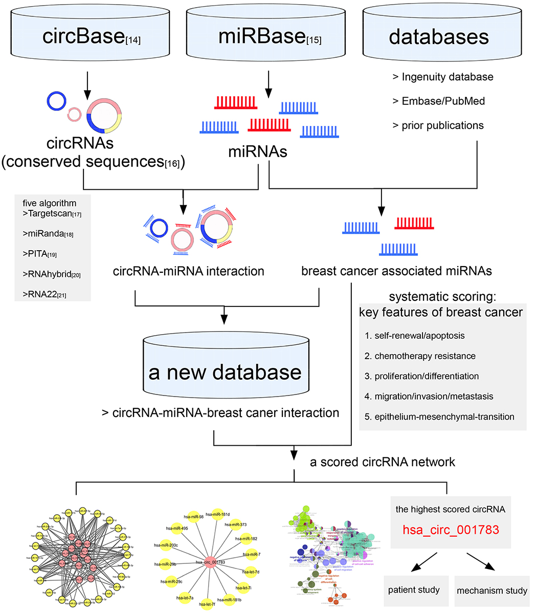

December 10th, 2024: Congratulations to Birong for successfully passing her PhD viva!
December 6th, 2024: Birong was selected to give a seminar at the EMBL-EBI-AstraZeneca workshop.
August 29th, 2024: Congratulations to Dien for successfully passing his PhD viva!
March 29th, 2024: Congratulations to Dien, who was selected to give a talk at the APASL 2024 annual meeting and won an Investigator Award.
March 1st, 2024: Congratulations to Wei for winning the European Association for the Study of Obesity Travel Grant and being selected to give a talk at the 31st European Congress on Obesity annual meeting.
November 27th, 2023: Dien’s review on Complement and NAFLD has been published in Liver International.
October 25th, 2023: Congratulations to Birong, who was selected as a finalist for the PGR Student Excellence Award for Innovation!
October 1st, 2023: Welcome to Luyang, who is joining the lab as a new PhD student.
September 25th, 2023: Congratulations to Birong, who was handpicked to attend the 2023 EASO Early Career Network Winter School, with full travel costs covered.
September 7th, 2023: Congratulations to Dien for winning the ECR award at the 29th International Compelment Workshop for his talk and abstract. Well done!
July 13th, 2023: Dr Zhou was invited to give a plenary webinar organised by the journal Nutrients.
July 5th, 2023: Our paper on COVID19 and SLE has been published in Clinical Immunology. This is a multi-team effort with great collaborators in Wuhan!
June 22nd, 2023: Birong was selected to give a talk on circRNA and NAFLD at the South West UK RNA Club.
October 10th, 2022: Our collaborative paper with Dr Yao on metabolic inflammation has been published in Allergy.
October 1st, 2022: Welcome two new PhD students, Adrian and Shenglei join the lab!
August 3rd, 2022: A fully funded PhD studentship (starting in Oct 2022) is available in the lab. Full tuition fee, personal stipend and research consumbles are covered. To apply please visit: https://bit.ly/3KlDfT5
August 1, 2022: We won a Wellcome Trust ITPA Knowledge Exchange and Training Award to work together with AstraZeneca!
July 22, 2022: We were awared a fully funded 3-year PhD studentship by the Health and Care Research Wales.
March 30, 2022: We received a Translation of Concept Scheme Institutional Translational Partnership Award from the Wellcome Trust towards finding new therapeutics to treat steteohepatitis.
February 4th, 2022: Together with Drs Garay and Siebzehnrubl, our application to a 4-year UKRI-BBSRC South West Bioscience PhD studentship was funded.
December 10th, 2021: Congratulations to Dien who won the best oral presentation award for PhD students in the Cardiff Infection and Immunity annual meeting 2021.
Oct 01, 2021: Welcome the new PhD student, Wei Hang who recently completed his MSc in Chemical Engineering from Xiamen.
March 15, 2021: Our 16S rRNA computational pipeline has been successfully used in a collaborative project led by Dr Yao as published in Science Advances.
Jan 10, 2021: Through collaboration with Dr Irshad, our collaborartive work on COVID19 in cancer patients has been published in Cancer cell.
Oct 08, 2020: Welcome the new PhD student, Birong Zhang who recently completed her Msc in statistics. Welcome the new joint PhD student, Jack McGeown (main supervisor: Dr Yao).
Sep 01, 2020: Proud of working in our BSI South Wales Immunology Group as featured in Immunology News.
March 15, 2020: A BBSRC EASTBIO DTP PhD studentship led by Dr Yao has been funded. Glad to serve as the 2nd supervisor.
Feb 01, 2020: We have been awarded the AWS Cloud Credits for Research (formerly AWS research grant). Thank you, Amazon！
Jan 13, 2020: Welcome Dien joining the lab as a PhD student. Thanks for the generous support by Vice-Chancellor’s International Scholarship for Research Excellence.
Nov 1, 2019: Welcome Dr Jing Sun from China Medical University joining the lab as a visiting scholar.
Oct 10, 2019: A GW4 PhD studentship is available in the lab. We WELCOME applicants from disciplines including Mathematics, Computer Science, Informatics, Bioinformatics or Biomedicine. To apply please see: https://bit.ly/2ppsM3C
Sep 25, 2019: Roanne has won the “Best Oral Presentation” Award at the European meeting on Comelment in human disease in Madrid. Congratulations!
July 01, 2019: Dr Zhou is now an Associate Theme Leader of Immunology, Infection and Inflammation in our College.
June 23, 2019: Welcome to Kayla Chan from School of Computer Science. She will do her master thesis in developing a webtool for lipidomic analysis.
June 20, 2019: In collaboration with researchers in mathematics and computer science, we worked on tackling healthcare challenges from industry using AI as highlighted in the University News.
June 18, 2019: Wellcome Adrian Chau joining the lab. He has recently been awarded a Wellcome Inspire Vacation Studentship to do his summer intern in the lab.
May 1, 2019: Dr. Zhou is invited to give a lecture at the Endocrinology, Nutrition & Metabolism & Cardiovascular seminar at the Southampton General Hospital (University of Southampton) on 25th June 2019.
Apr. 1, 2019: Dr. Zhou is invited to give a talk at the University of Edinburgh/Centre for Inflammation Research Seminar programme on May 17, 2019.
Feb 2019: Dr. Zhou is now an editor of Frontiers in Pharmacology and Frontiers in Genetics for a topic: “Gene Variation and Drug Efficacy in the Field of NAFLD or NASH”.
Jan. 22, 2019: Through collaboration with Dr. Gong at the Sun Yat-sen Memorial Hospital, our circular RNA screening workflow is published in Cell Death & Disease! 
Dec. 2018: Our collaborative paper in Diabete Care has been commented in the New York Times!
Oct. 2018: Nick was selected to give an oral presentation in the I&I annual meeting at the Cardiff City Stadium. The only medical student was selected. Congratulaions!
Sep. 2018: Our paper titled “Hepatic ceramides dissociate steatosis and insulin resistance in patients with non-alcoholic fatty liver disease” has been featured as a highly cited paper by the Essential Science Indicators (ESI). Its citations ranked top 1% of the academic field of Clinical Medicine.
June 21, 2018: Through collaboration with Prof. Yki-Jarvinen at the University of Helsinki, our paper titled “Saturated fat is more metabolically harmful for the human liver than unsaturated fat or simple sugars” is accepted in Diabete Care!
Sep 2018: David has been awarded an intercalation offer to study in Imperial. Congratulations!
June 2018: We have been granted DIRI Seedcorn Fund.
Apr. 2018: Dr. Zhou is selected as the chair of the British Society for Immunology South Wales Group
Oct. 2017: We have won the Immune Homeostasis Innovation Funding Award by Cancer Research UK and Arthritis Research UK
July 18-20, 2017: Dr. Zhou attended the Immune Homeostasis Innovation Workshop co-organised by Cancer Research UK and Arthritis Research UK.
June 6 2017: Dr. Zhou gave a talk at the “Data Challenges in Systems Immunology” seminar.
May 2017: Our paper on IL-9 and liver fibrosis has been recommended by Faculty of 1000 with ★★ as “New Finding” and “Novel Drug Target” and “Elegant study”!
Mar. 2017: Our paper on hepatic ceramides has been featured in Faculty of 1000!
Dec. 2016: Our novel “omics” approach for diagnosis of Nonalcoholic Steatohepatitis has been highlighted on Daily Express,Cardiff Star, New Atlas, Bioanalysis-zone, Associació Catalana de Malalts d’Hepatitis, Cardiff University News etc!
Oct. 2016: Our paper on using lipidomics, metabolomics and genetics for diagnosis of Nonalcoholic Steatohepatitis has been published in Clinical Gastroenterology and Hepatology!
June 2016: Our paper on the lipidomic analysis of ceramides in liver biopsies has been published in Journal of Hepatology!
Mar. 2016: Our paper on the role of IL-9 in liver fibrosis has been published in Scientific Reports!